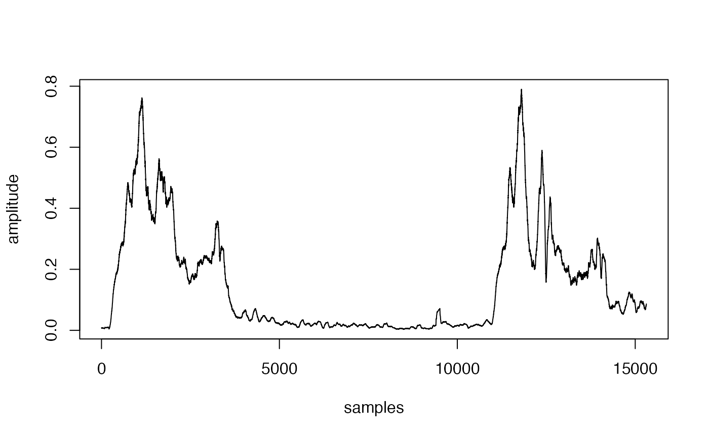

get_envelopes extracts absolute amplitude envelopes to speed up energy detection
Usage
get_envelopes(
path = ".",
files = NULL,
bp = NULL,
hop.size = 11.6,
wl = NULL,
cores = 1,
thinning = 1,
pb = TRUE,
smooth = 5,
normalize = TRUE
)Arguments
- path
Character string containing the directory path where the sound files are located. The current working directory is used as default.
- files
character vector or indicating the sound files that will be analyzed. Supported file formats:'.wav', '.mp3', '.flac' and '.wac'. If not supplied the function will work on all sound files (in the supported format) in 'path'.
- bp
Numeric vector of length 2 giving the lower and upper limits of a frequency bandpass filter (in kHz). Default is
NULL. Bandpass is done using the functionffilter, which applies a short-term Fourier transformation to first create a spectrogram in which the target frequencies are filtered and then is back transformed into a wave object using a reverse Fourier transformation.- hop.size
A numeric vector of length 1 specifying the time window duration (in ms). Default is 11.6 ms, which is equivalent to 512 wl for a 44.1 kHz sampling rate. Ignored if 'wl' is supplied.
- wl
A numeric vector of length 1 specifying the window length of the spectrogram. Default is
NULL. If supplied, 'hop.size' is ignored. Used internally for bandpass filtering (so only applied when 'bp' is supplied).- cores
Numeric. Controls whether parallel computing is applied. It specifies the number of cores to be used. Default is 1 (i.e. no parallel computing).
- thinning
Numeric vector of length 1 in the range 0~1 indicating the proportional reduction of the number of samples used to represent amplitude envelopes (i.e. the thinning of the envelopes). Usually amplitude envelopes have many more samples than those needed to accurately represent amplitude variation in time, which affects the size of the output (usually very large R objects / files). Default is
1(no thinning). Higher sampling rates can afford higher size reduction (e.g. lower thinning values). Reduction is conducted by linear interpolation usingapprox. Note that thinning may decrease time precision and that the higher the thinning the less precise the time detection. It's generally not advised if no smoothing ('smooth' argument) is applied.- pb
Logical argument to control progress bar. Default is
TRUE.- smooth
A numeric vector of length 1 to smooth the amplitude envelope with a sum smooth function. It controls the time 'neighborhood' (in ms) in which amplitude samples are smoothed (i.e. averaged with neighboring samples). Default is 5. 0 means no smoothing is applied. Note that smoothing is applied before thinning (see 'thinning' argument). The function
envelopeis used internally which is analogous to sum smoothing inenv. This argument is used internally byget_envelopes.- normalize
Logical argument to control if envelopes are normalized to a 0-1 range.
Details
This function extracts the absolute amplitude envelopes of sound files. Can be used to manipulate envelopes before running energy_detector.
References
Araya-Salas, M., Smith-Vidaurre, G., Chaverri, G., Brenes, J. C., Chirino, F., Elizondo-Calvo, J., & Rico-Guevara, A. (2023). ohun: An R package for diagnosing and optimizing automatic sound event detection. Methods in Ecology and Evolution, 14, 2259–2271. https://doi.org/10.1111/2041-210X.14170
Author
Marcelo Araya-Salas (marcelo.araya@ucr.ac.cr).
Examples
{
# Save to temporary working directory
data(list = c("lbh1", "lbh2"))
tuneR::writeWave(lbh1, file.path(tempdir(), "lbh1.wav"))
tuneR::writeWave(lbh2, file.path(tempdir(), "lbh2.wav"))
# get raw absolute amplitude envelopes
envs <- get_envelopes(path = tempdir())
# extract segment for the first sound event in the first sound file
x <- envs[[1]]$envelope
# and plot it
plot(x[(length(x) / 9):(length(x) / 4)], type = "l", xlab = "samples", ylab = "amplitude")
# smoothing envelopes
envs <- get_envelopes(path = tempdir(), smooth = 6.8)
x <- envs[[1]]$envelope
plot(x[(length(x) / 9):(length(x) / 4)], type = "l", xlab = "samples", ylab = "amplitude")
# smoothing and thinning
envs <- get_envelopes(path = tempdir(), thinning = 1 / 10, smooth = 6.8)
x <- envs[[1]]$envelope
plot(x[(length(x) / 9):(length(x) / 4)], type = "l", xlab = "samples", ylab = "amplitude")
# no normalization
envs <- get_envelopes(path = tempdir(), thinning = 1 / 10, smooth = 6.8)
x <- envs[[1]]$envelope
plot(x[(length(x) / 9):(length(x) / 4)],
type = "l", xlab = "samples", ylab = "amplitude",
normalize = FALSE
)
}

#> Warning: "normalize" is not a graphical parameter
#> Warning: "normalize" is not a graphical parameter
#> Warning: "normalize" is not a graphical parameter
#> Warning: "normalize" is not a graphical parameter
#> Warning: "normalize" is not a graphical parameter
#> Warning: "normalize" is not a graphical parameter